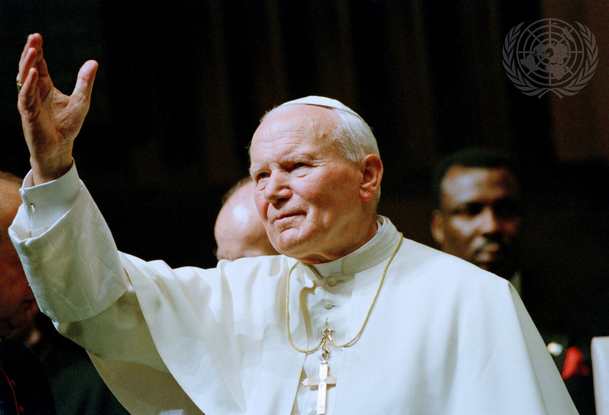
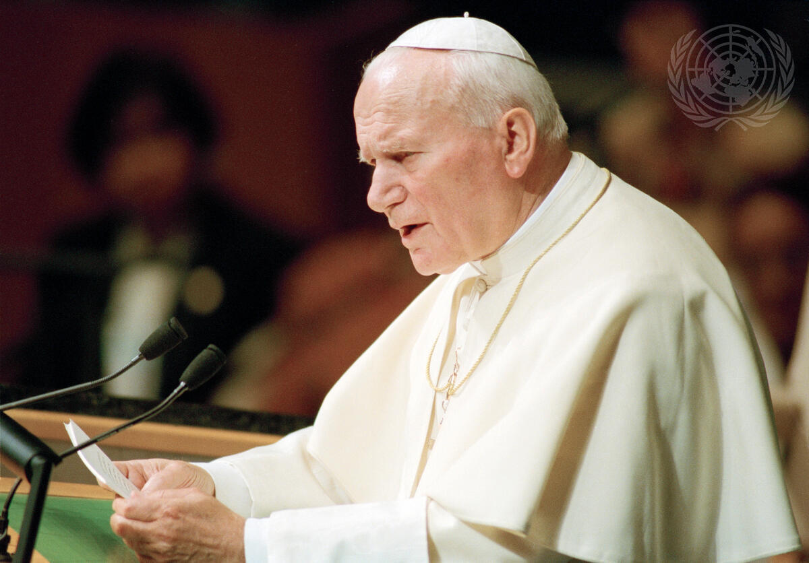

"The leadership content brought together tradition, ethics, and practical strategy in a way that made every session feel immediately useful."
— Executive LeaderVideo Testimonials
Listen to leaders, alumni, and partners.
Experience video stories that illustrate how the program connects leadership, culture, and faith.
Featured testimonial
Dr. Larry Barton Testimony
Watch Dr. Larry Barton describe how leadership formation shapes practical mission-driven work.

View the full testimony on YouTube, including his reflections on leadership, ethics, and mission.
Watch Larry Barton's videoWhat People Say
Testimonials that highlight the program's impact.
Gallery
Visual moments from learning and engagement.
Seminar dialogue

Campus discussion

Leadership conversation